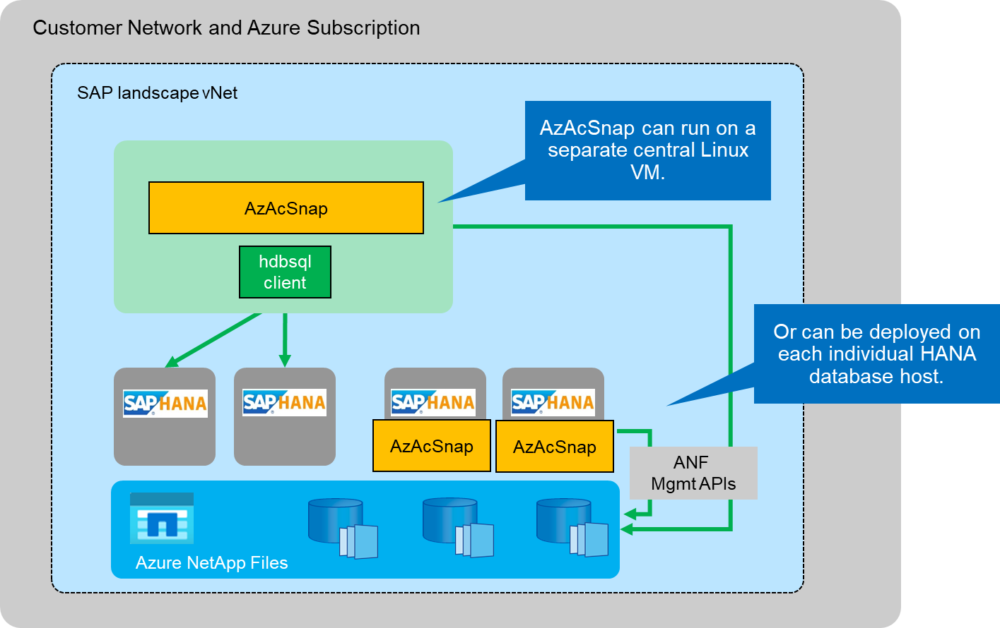
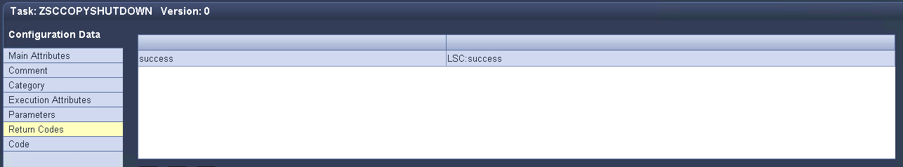
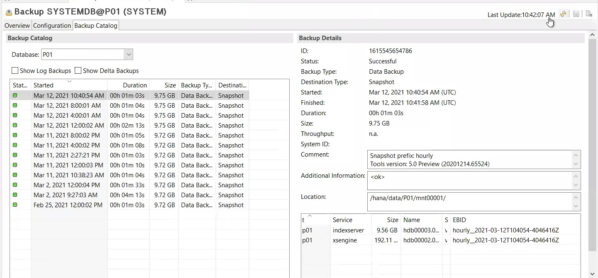
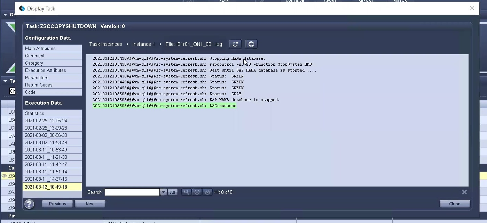

请求文档变更
请求文档变更 在 GitHub 上编辑
在 GitHub 上编辑 提供者指南
提供者指南使用LSC、AzAcSnap和Azure NetApp Files 更新SAP HANA系统
提供者
使用 "适用于SAP HANA的Azure NetApp Files"在Azure上运行的原生 、Oracle和DB2为客户提供了NetApp ONTAP 的高级数据管理和数据保护功能以及Microsoft Azure NetApp Files 服务。 "AzAcSnap" 是快速执行SAP系统刷新操作以创建SAP HANA和Oracle系统的应用程序一致的NetApp Snapshot副本的基础(AzAcSnap目前不支持DB2)。
Snapshot副本备份是在备份策略中按需或定期创建的、随后可以高效克隆到新卷、并用于快速刷新目标系统。AzAcSnap提供了创建备份并将其克隆到新卷所需的工作流、而Libelle SystemCopy则执行全面的端到端系统刷新所需的预处理和后处理步骤。
在本章中、我们将介绍使用AzAcSnap和Libelle SystemCopy以及SAP HANA作为基础数据库的自动化SAP系统刷新。由于AzAcSnap也可用于Oracle、因此也可以使用适用于Oracle的AzAcSnap实施相同的操作步骤。AzAcSnap将来可能会支持其他数据库、然后会使用LSC和AzAcSnap为这些数据库启用系统复制操作。
下图显示了使用AzAcSnap和LSC的SAP系统刷新生命周期的典型高级工作流：
-
一次性初始安装和准备目标系统。
-
由LSC执行的SAP预处理操作。
-
将源系统的现有Snapshot副本还原(或克隆)到目标系统由AzAcSnap执行。
-
由LSC执行的SAP后处理操作。
然后、该系统可用作测试或QA系统。请求新的系统刷新后、工作流将在步骤2中重新启动。必须手动删除所有剩余的克隆卷。

前提条件和限制
必须满足以下前提条件。
已为源数据库安装并配置AzAcSnap
通常、AzAcSnap有两个部署选项、如下图所示。

可以在中央Linux VM上安装和运行AzAcSnap、所有数据库配置文件均集中存储在该VM上、AzAcSnap可通过hdbsql客户端访问所有数据库以及所有这些数据库的已配置HANA用户存储密钥。通过分散式部署、AzAcSnap会单独安装在通常仅存储本地数据库的数据库配置的每个数据库主机上。LSC集成支持这两种部署选项。但是、我们在本文档的实验室设置中采用了一种混合方法。AzAcSnap与所有数据库配置文件一起安装在一个中央NFS共享上。此中央安装共享已挂载到`/mnt/software/AZACSNAP/snapshot-tool`下的所有VM上。然后、在DB VM上本地执行该工具。
已为源SAP系统和目标SAP系统安装和配置Libelle SystemCopy
Libelle SystemCopy部署包括以下组件：

-
* LSC主系统。*顾名思义、这是一个主组件、用于控制基于Lible的系统副本的自动工作流。
-
* LSC Worker*。LSC员工通常在目标SAP系统上运行、并执行自动系统复制所需的脚本。
-
* LSC Satellite。* LSC Satellite运行在第三方系统上、必须在该系统上执行其他脚本。LSC主节点还可以充当LSC卫星系统的角色。
必须在合适的虚拟机上安装Libelle SystemCopy (LSC)图形用户界面。在此实验室设置中、LSC GUI安装在单独的Windows VM上、但也可以与LSC工作人员一起在DB主机上运行。LSC工作程序必须至少安装在目标数据库的VM上。根据您选择的AzAcSnap部署选项、可能需要安装其他LSC辅助设备。必须在执行AzAcSnap的虚拟机上安装LSC辅助程序。
安装LSC后、必须根据LSC准则执行源数据库和目标数据库的基本配置。下图显示了本文档中实验室环境的配置。有关源SAP系统和目标SAP系统及数据库的详细信息、请参见下一节。

您还应为SAP系统配置合适的标准任务列表。有关LSC安装和配置的详细信息、请参见LSC安装包中的LSC用户手册。
已知限制
此处介绍的AzAcSnap和LSC集成仅适用于SAP HANA单主机数据库。也可以支持SAP HANA多主机(或横向扩展)部署、但此类部署需要在复制阶段对LSC自定义任务以及底层脚本进行一些调整或增强。本文档不会介绍此类增强功能。
SAP系统刷新集成始终使用源系统的最新成功Snapshot副本执行目标系统刷新。如果您要使用其他较早的Snapshot副本、请使用中的相应逻辑 ZAZACSNAPRESTORE 必须调整自定义任务。本文档不会介绍此过程。
实验室设置
实验室设置由一个源SAP系统和一个目标SAP系统组成、这两个系统都运行在SAP HANA单主机数据库上。
下图显示了实验室设置。

它包含以下系统、软件版本和Azure NetApp Files 卷：
-
* P01.* SAP HANA 2.0 SP5数据库。源数据库、单主机、单用户租户。
-
* PN1* SAP NetWeaver ABAP 7.51。源SAP系统。
-
安装了具有AzAcSnap的* VM-P01.* SLES 15 SP2。托管P01和PN1的源VM。
-
* qL1.* SAP HANA 2.0 SP5数据库。系统刷新目标数据库、单主机、单用户租户。
-
* QN1* SAP NetWeaver ABAP 7.51。系统更新目标SAP系统。
-
已安装具有LSC Worker的* VM-ql1.* SLES 15 SP2。托管QL1和QN1的目标VM。
-
LSC主版本9.0.0.052。
-
虚拟机- LSC-MASTER. Windows Server 2016。托管LSC主界面和LSC图形用户界面。
-
专用数据库主机上挂载的P01和QL1的数据、日志和共享Azure NetApp Files 卷。
-
用于在所有VM上挂载脚本、AzAcSnap安装和配置文件的中央Azure NetApp Files 卷。
初始一次性准备步骤
在执行首次SAP系统刷新之前、您必须集成由AzAcSnap执行的基于Azure NetApp Files Snapshot副本和克隆的存储操作。此外、还必须执行辅助脚本来启动和停止数据库以及挂载或卸载Azure NetApp Files 卷。在复制阶段、所有必需的任务都会在LSC中作为自定义任务执行。下图显示了LSC任务列表中的自定义任务。

此处将详细介绍所有五个复制任务。在其中某些任务中、使用示例脚本`sc-system-refresh.sh`进一步自动执行所需的SAP HANA数据库恢复操作以及数据卷的挂载和卸载。该脚本会在系统输出中使用`LSC：success`消息来指示已成功执行LSC。有关自定义任务和可用参数的详细信息、请参见LSC用户手册和LSC开发人员指南。此实验室环境中的所有任务都会在目标DB VM上执行。

|
示例脚本按原样提供、NetApp不支持。您可以通过电子邮件向以下地址请求此脚本：mailto：ng-sapcc@netapp.com^ ng-sapcc@netapp.com。 |
Sc-system-refresh.sh配置文件
如前所述、系统会使用辅助脚本启动和停止数据库、挂载和卸载Azure NetApp Files 卷以及从Snapshot副本恢复SAP HANA数据库。脚本`sc-system-refresh.sh`存储在中央NFS共享上。该脚本要求为每个目标数据库提供一个配置文件、该文件必须与该脚本本身存储在同一文件夹中。配置文件必须具有以下名称：sc-system-refresh-<target DB sid>.cfg(例如、在此实验室环境中为`sc-system-refresh-ql1.cfg`)。此处使用的配置文件使用固定/硬编码的源数据库SID。进行一些更改后、可以对脚本和配置文件进行增强、以将源数据库SID用作输入参数。
必须根据特定环境调整以下参数：
# hdbuserstore key, which should be used to connect to the target database
KEY=”QL1SYSTEM”
# single container or MDC
export P01_HANA_DATABASE_TYPE=MULTIPLE_CONTAINERS
# source tenant names { TENANT_SID [, TENANT_SID]* }
export P01_TENANT_DATABASE_NAMES=P01
# cloned vol mount path
export CLONED_VOLUMES_MOUNT_PATH=`tail -2 /mnt/software/AZACSNAP/snapshot_tool/logs/azacsnap-restore-azacsnap-P01.log | grep -oe “[0-9]*\.[0-9]*\.[0-9]*\.[0-9]*:/.* “`
ZSCCOPYSHUTDOWN
此任务将停止目标SAP HANA数据库。此任务的代码部分包含以下文本：
$_include_tool(unix_header.sh)_$ sudo /mnt/software/scripts/sc-system-refresh/sc-system-refresh.sh shutdown $_system(target_db, id)_$ > $_logfile_$
脚本`sc-system-refresh.sh`采用两个参数`shutdown`命令和DB SID、使用sapcontrol停止SAP HANA数据库。系统输出将重定向到标准LSC日志文件。如前所述、系统会使用`LSC：success`消息指示执行成功。

ZSCCOPYUMOUNT
此任务将从目标数据库操作系统(OS)卸载旧的Azure NetApp Files 数据卷。此任务的代码部分包含以下文本：
$_include_tool(unix_header.sh)_$ sudo /mnt/software/scripts/sc-system-refresh/sc-system-refresh.sh umount $_system(target_db, id)_$ > $_logfile_$
使用与上一任务相同的脚本。传递的两个参数是`umount`命令和DB SID。
ZAZACSNAPRESTORE
此任务将运行AzAcSnap、以便将源数据库的最新成功Snapshot副本克隆到目标数据库的新卷。此操作相当于在传统备份环境中重定向还原备份。但是、即使对于最大的数据库、Snapshot副本和克隆功能也可以在数秒内执行此任务、而对于传统备份、此任务可能需要几个小时的时间。此任务的代码部分包含以下文本：
$_include_tool(unix_header.sh)_$ sudo /mnt/software/AZACSNAP/snapshot_tool/azacsnap -c restore --restore snaptovol --hanasid $_system(source_db, id)_$ --configfile=/mnt/software/AZACSNAP/snapshot_tool/azacsnap-$_system(source_db, id)_$.json > $_logfile_$
有关`restore`命令的AzAcSnap命令行选项的完整文档、请参见Azure文档： "使用Azure应用一致的Snapshot工具还原"。此调用假定可以在中央NFS共享上找到源数据库的json DB配置文件、命名约定如下：azacsnap-<source DB SID>。JSON、(例如、此实验室环境中的`azacsnap-P01.json`)。
|
|
由于无法更改AzAcSnap命令的输出、因此无法使用默认的`LSC：Success`消息执行此任务。因此、AzAcSnap输出中的字符串`示例挂载指令`用作成功的返回代码。在AzAcSnap 5.0 GA版本中、只有在克隆过程成功时、才会生成此输出。 |
下图显示了AzAcSnap还原到新卷成功消息。

ZSCCOPYMOUNT
此任务会将新的Azure NetApp Files 数据卷挂载到目标数据库的操作系统上。此任务的代码部分包含以下文本：
$_include_tool(unix_header.sh)_$ sudo /mnt/software/scripts/sc-system-refresh/sc-system-refresh.sh mount $_system(target_db, id)_$ > $_logfile_$
此时将再次使用sc-system-refresh.sh脚本、传递`mount`命令和目标数据库SID。
ZSCCOPYRECOVER
此任务将根据已还原(克隆)的Snapshot副本对系统数据库和租户数据库执行SAP HANA数据库恢复。此处使用的恢复选项适用于特定数据库备份、例如、不会为正向恢复应用任何其他日志。因此、恢复时间非常短(最多几分钟)。此操作的运行时间取决于SAP HANA数据库的启动情况、该数据库会在恢复过程后自动发生。为了加快启动速度、如果需要、可以临时增加Azure NetApp Files 数据卷的吞吐量、如本Azure文档所述： "动态增加或减少卷配额"。此任务的代码部分包含以下文本：
$_include_tool(unix_header.sh)_$ sudo /mnt/software/scripts/sc-system-refresh/sc-system-refresh.sh recover $_system(target_db, id)_$ > $_logfile_$
此脚本将再次与`re封面`命令和目标数据库SID结合使用。
SAP HANA系统刷新操作
在本节中、实验室系统的刷新操作示例显示了此工作流的主要步骤。
已为备份目录中列出的P01源数据库创建常规和按需Snapshot副本。

在刷新操作中、使用了3月12日起的最新备份。在备份详细信息部分中、列出了此备份的外部备份ID (EBID)。这是Azure NetApp Files 数据卷上相应Snapshot副本备份的Snapshot副本名称、如下图所示。

要启动刷新操作、请在LSC图形用户界面中选择正确的配置、然后单击开始执行。

LSC将开始执行检查阶段的任务、然后执行预阶段的已配置任务。

作为预阶段的最后一步、目标SAP系统将停止。在以下复制阶段、将执行上一节中所述的步骤。首先、目标SAP HANA数据库将停止、而旧的Azure NetApp Files 卷将从操作系统中卸载。

然后、ZAZACSNAPRESTORE任务将从P01系统的现有Snapshot副本创建一个新卷作为克隆。以下两张图片显示了LSC图形用户界面中的任务日志以及Azure门户中克隆的Azure NetApp Files 卷。


然后、此新卷将挂载到目标数据库主机上、系统数据库和租户数据库将使用包含的Snapshot副本进行恢复。成功恢复后、SAP HANA数据库将自动启动。SAP HANA数据库的启动占用复制阶段的大部分时间。无论数据库大小如何、其余步骤通常只需几秒到几分钟即可完成。下图显示了如何使用SAP提供的python恢复脚本恢复系统数据库。

复制阶段结束后、LSC将继续执行后阶段中定义的所有步骤。系统刷新过程完全完成后、目标系统将重新启动并运行并完全可用。使用此实验室系统时、SAP系统刷新的总运行时间约为25分钟、其中复制阶段占用的时间仅不到5分钟。